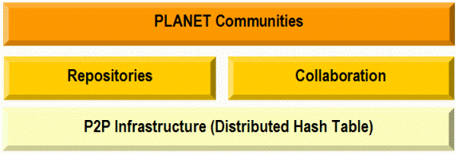

<html>
<!DOCTYPE html PUBLIC "-//W3C//DTD XHTML 1.0 Transitional//EN" "http://www.w3.org/TR/xhtml1/DTD/xhtml1-transitional.dtd">

<html>
<!-- Mirrored from planet.urv.es/ by HTTrack Website Copier/3.x [XR&CO'2014], Mon, 02 Nov 2026 08:59:21 GMT -->
<head><meta charset="utf-8"/>
<title>
            Planet : Augmented Collaborative Plataform for content distribution 
			and advanced training
          </title>
<style type="text/css">
          @import url("style/tigris.css");
          @import url("style/maven.css");
		</style>
<meta content="text/html; charset=utf-8" http-equiv="Content-Type"/>
<meta content="p2p, dht, cscw, virtual reality, augmented reality, collaboration" name="keywords"/>
<script id="onDate" language="JavaScript"></script>
<script language="JavaScript" src="planet/stat1bb.html"></script>
</head>
<body class="composite" style="text-align: left">
<div id="banner">
<table border="0" cellpadding="8" cellspacing="0" width="100%">
<tr>
<td>
<a href="index.html">
</a><span style="text-decoration: none"><a href="index-2.html"></a></span>
<span style="text-decoration: none">    
                  </span>
<span style="font-weight: 700">
<a href="index.html">Augmented Collaborative 
					Plataform for content distribution and advanced training</a></span></td>
</tr>
</table>
</div>
<div id="breadcrumbs">
<table border="0" cellpadding="4" cellspacing="0" width="98%">
<tr>
<td width="286"><font size="2">Last Updated: 13 February 2006</font></td>
<td>
<div align="right">
<font size="2">
<a href="http://www.etse.urv.es/recerca/ast/">AST 
		Research Group</a>|
      <a href="http://www.tecn.upf.es/gti/">GTI 
		Research Group</a> 
		</font>
</div>
</td>
</tr>
</table>
</div>
<table border="0" cellpadding="8" cellspacing="0" width="100%">
<tr valign="top">
<td id="leftcol" width="126">
<div id="navcolumn">
<div>
<strong>Planet</strong>
<div>
<p style="margin-top: 0; margin-bottom: 0">
<small>
<a href="#Description">
<b></b>Overview</a></small><p style="margin-top: 0; margin-bottom: 0">
<small>
<a href="#News">
<b></b>News</a></small></p></p></div>
<div>
<p style="margin-top: 0; margin-bottom: 0">
<small>
<a href="#Authors">People</a></small></p></div>
<div>
<p style="margin-top: 0; margin-bottom: 0"><small>
<a href="#Publications_">
Publications</a>
</small>
</p></div>
<p style="margin-top: 0; margin-bottom: 0"> </p>
<p style="margin-top: 0; margin-bottom: 0"><strong>Documentation</strong>
</p>
<div><small><b><a href="#Description">
</a></b></small><a href="context.html">Context</a> 
			(spanish)</div>
<div><small><a href="tasks.html">Tasks</a><span lang="es"> 
			(URV)</span></small></div>
<div><p style="margin-top: 0; margin-bottom: 0"> </p></div>
<p style="margin-top: 0; margin-bottom: 0"><strong>Related Projects</strong></p>
<div><small><b><a href="#Description">
</a></b></small><a href="http://www.sics.se/pepito/">PEPITO</a></div>
<div><small><a href="http://research.ac.upc.es/crac/">Crac</a></small></div>
<div>
<p style="margin-top: 0; margin-bottom: 0"><small><a href="#Publications_">
</a><a href="http://www.edusource.ca/">Edusource</a></small></p>
<p style="margin-top: 0; margin-bottom: 0"><small>
<a href="#Publications_">
</a><a href="http://e-next.dei.uc.pt/index.php">E-next</a></small></p>
<p style="margin-top: 0; margin-bottom: 0"><small>
<a href="#Publications_">
</a><a href="http://www.tecn.upf.es/scope/showcase/">SCOPE</a></small><p style="margin-top: 0; margin-bottom: 0"><small>
<a href="#Publications_">
</a></small><a href="http://www.unfold-project.net:8085/UNFOLD">UNFOLD</a><p style="margin-top: 0; margin-bottom: 0"><small>
<a href="#Publications_">
</a><a href="http://www.tecn.upf.es/gti">TIFANIS</a></small></p></p></p></div>
<p style="margin-top: 0; margin-bottom: 0"> </p>
<p style="margin-top: 0; margin-bottom: 0"><strong>Results</strong></p>
<div>
<p style="margin-top: 0; margin-bottom: 0"><small>
<a href="p2pweb/index.html"><font color="#1F354D">p2pWeb</font></a></small></p>
<p style="margin-top: 0; margin-bottom: 0">  <small>
- <a href="snap/index.html">
SNAP</a></small></p>
<p style="margin-top: 0; margin-bottom: 0"><small>
			 
			- <a href="DERMI/index.html">
Dermi</a></small></p>
<p style="margin-top: 0; margin-bottom: 0"><small>
			 
			- <a href="p2pcm/index.html">
p2pCM</a></small></p>
<p style="margin-top: 0; margin-bottom: 0"><small>
 
			- <a href="damon/index.html">
Damon</a></small></p>
<p style="margin-top: 0; margin-bottom: 0"><small>
			 
			- <a href="bunshin/index.html">
Bunshin</a></small></p>
<p style="margin-top: 0; margin-bottom: 0"><small>
</small><a href="http://projects-deim.urv.cat/trac/planetsim"><small>PlanetSim</small></a></p>
<p style="margin-top: 0; margin-bottom: 0"><small>
<a href="planetdr/index.html">PlanetDR</a></small></p>
<p style="margin-top: 0; margin-bottom: 0"><small>
<a href="move/index.html">Move</a></small></p>
<p style="margin-top: 0; margin-bottom: 0"><small>
<a href="planetrv/index.html">PlanetRV</a> </small>
</p></div>
</div>
<div>
<p> </p></div>
</div>

</td>
<td rowspan="2">
<div id="bodycol">
<div class="app">
<div class="h3">
<h3><a name="Description"><span style="background-repeat: repeat">
<font size="2">Overview</font></span></a></h3>
<p style="text-align: center">
<font face="Verdana" size="2">Ref. TIC2003-09288-C02-00. Ministerio de 
		Ciencia y Tecnología</font></p>
<p style="text-align: center">
<font size="2">December 2003 - 2006</font></p>
<p style="text-align: center">		
		 </p>
<p style="text-align: justify">
<font size="2">The main goal of this project is to develop a low-cost 
		multiuser collaborative platform for advanced training in settings like 
		Architecture, Medicine or scientific simulation. The platform will 
		extend an existing Collaborative Virtual Environment (MOVE) in order to 
		provide advanced interaction and visualization with immersive virtual 
		reality 3D devices like Head Mounted Displays, gloves and stereoscopic 
		projection systems. We will also experiment with augmented reality 
		systems in mobile scenarios in order to generate improved training 
		contents for the selected disciplines.The second goal of this project  
		is focused on educational  content generation and distribution. In 
		this point, we will extend the collaborative platform in order to create 
		a distributed content repository. This repository will be constructed on 
		top of a decoupled architecture using hybrid centralized / replicated /federated 
		peer to peer systems. Furthermore, the system will permit a hierarchical 
		access to distributed contents located in  diferent knowledge 
		repositories through content brokers and mediators. We will also 
		integrate collaboration tools in the content�s life cycle in order to 
		promote knowledge communities around educational content hierarchies.The 
		project aims to be inter-disciplinary, because it comprises computer 
		scientists and researchers from settings like pedagogy, architecture and 
		medicine. Obviously, computer scientists will focus on system 
		development and the rest will work on content generation and interaction 
		with the PLANET environment.</font></p>
<p style="text-align: center">		
		 </p>
<p style="text-align: center">
</p>
<p style="text-align: center; text-autospace: none">
		 </p>
<div class="h3">
<p style="text-align: justify">		
		 </p></div>
<h3><span style="background-repeat: repeat">
<font size="2"><a name="News">News</a></font></span></h3>
<blockquote>
<p style="margin-top: 0; margin-bottom: 0">
<p style="margin-top: 0; margin-bottom: 0"><b><font size="2">(28-05-07) </font></b><font size="2"> 
- PlanetRV becomes a SourceForge.net  <a href="http://sourceforge.net/projects/mrplanet">
project</a></font></p><br/>
<p style="margin-top: 0; margin-bottom: 0"><b><font size="2">(27-07-06) </font></b><font size="2">
- PlanetSim becomes a SourceForge.net  <a href="http://sourceforge.net/projects/planetsim">
project</a></font></p><br/>
<p style="margin-top: 0; margin-bottom: 0"><b><font size="2">(31-07-05) </font></b><font size="2">
	- Released <a href="http://ants.etse.urv.es/snap">SNAP</a> v1.0.0 RC1</font></p><br/>
<p style="margin-top: 0; margin-bottom: 0">
<p style="margin-top: 0; margin-bottom: 0"><b><font size="2">(29-07-05) </font></b><font size="2">
- Released <a href="planetsim/index.html#Downloads">PlanetSim</a> 
Release 3.0 Candidate</font></p><br/>
<p style="margin-top: 0; margin-bottom: 0"><b><font size="2">
			(11-11-04) </font></b><font size="2">- Released
			<a href="http://ants.etse.urv.es/bunshin">Bunshin</a> v 1.1</font></p>
<p style="margin-top: 0; margin-bottom: 0"> </p>
<p style="margin-top: 0; margin-bottom: 0"><b><font size="2">
			(08-11-04) </font></b><font size="2">- Uploaded
			<a href="http://ants.etse.urv.es/DERMI">DERMI</a> v1.2 Alpha 2 </font></p>
<p style="margin-top: 0; margin-bottom: 0"> </p>
<p style="margin-top: 0; margin-bottom: 0"><b><font size="2">
			(</font></b><strong><font size="2">29-10-04</font></strong><b><font size="2">) </font></b><font size="2">
			- Released
			<a href="http://ants.etse.urv.es/planetdr/info/info7.html#download">
			PlanetDR</a><span style="text-decoration: none"> 
			Beta Version 2</span> </font></p>
<p style="margin-top: 0; margin-bottom: 0"> </p>
<p style="margin-top: 0; margin-bottom: 0"><b><font size="2">
			(25-10-04) </font></b><font size="2">- Released
			<a href="http://ants.etse.urv.es/bunshin">Bunshin</a> Release 
			Version 1.0</font></p>
<p style="margin-top: 0; margin-bottom: 0"> </p>
<p style="margin-top: 0; margin-bottom: 0"><b><font size="2">
			(08-10-04) </font></b><font size="2">-<b> </b>Uploaded
			<a href="http://ants.etse.urv.es/DERMI">DERMI</a> Release Version 
			1.2 Alpha1 </font></p>
<p style="margin-top: 0; margin-bottom: 0"> </p>
<p style="margin-top: 0; margin-bottom: 0"><b><font size="2">
			(01-10-04) </font></b><font size="2">-<b> </b>Uploaded
			<a href="http://ants.etse.urv.es/planetdr">PlanetDR</a> Release 
			Version 1.0 Beta. </font> </p>
<p style="margin-top: 0; margin-bottom: 0"> </p>
<p style="margin-top: 0; margin-bottom: 0"><b><font size="2">
			(21-09-04) </font></b><font size="2">-<b> </b>PlanetSim presentation 
			at SEM 2004 (</font><font face="Verdana" size="2">Software 
			Engineering and Middleware</font><font size="2">)</font></p>
<p style="margin-top: 0; margin-bottom: 0"> </p>
<p style="margin-top: 0; margin-bottom: 0"><font size="2"><b>
			(10-09-04) </b>- <a href="http://www.unfold-project.net:8085/UNFOLD">
			UNFOLD</a> meeting in Barcelona</font></p>
<p style="margin-top: 0; margin-bottom: 0"> </p>
<p style="margin-top: 0; margin-bottom: 0"><font size="2"><b>
			(12-07-04)</b> - Planet plenary meeting in Barcelona</font></p>
<p style="margin-top: 0; margin-bottom: 0"> </p>
<p style="margin-top: 0; margin-bottom: 0"> </p>
</p></p></blockquote></div>
<h3><a name="Authors"><span style="background-repeat: repeat">
<font size="2">People</font></span></a></h3>
<blockquote>
<p style="margin-top: 0; margin-bottom: 0"><font size="3"><b>Partner 
			1 - URV</b></font></p>
<p style="margin-top: 0; margin-bottom: 0"> </p>
<p style="margin-top: 0; margin-bottom: 0"><font size="2"><b><a href="http://ast-deim.urv.cat/pedro//index.php">
			Pedro García López</a></b>, full-time professor in the Department 
			of Computer Science and Mathematics at Universitat Rovira i Virgili 
			in Tarragona, Catalonia, Spain. Contact
			<a href="mailto:pedro.garcia@urv.net">&lt;pedro.garcia@urv.net</a>&gt;
			</font></p>
<p style="margin-top: 0; margin-bottom: 0"> </p>
<p style="margin-top: 0; margin-bottom: 0"><font size="2"><b><a href="http://www.etse.urv.es/~cpairot">
			Carles Pairot Gavaldà</a></b>, PhD student in the Department of 
			Computer Science and Mathematics at Universitat Rovira i Virgili in 
			Tarragona, Catalonia, Spain. Contact
			<a href="mailto:carles.pairot@urv.net">&lt;carles.pairot@urv.net</a>&gt;</font></p>
<p style="margin-top: 0; margin-bottom: 0"> </p>
<p style="margin-top: 0; margin-bottom: 0">
<font size="2">
<span style="font-family: Verdana">
<a href="http://ast-deim.urv.cat/marc/"><b>Marc Sanchez</b></a></span><span lang="ES-MODERN" style="font-family: Verdana">, </span>
									PhD student in the Department of Computer 
									Science and Mathematics at Universitat 
									Rovira i Virgili in Tarragona, Catalonia, 
									Spain.</font></p>
<p style="margin-top: 0; margin-bottom: 0"> </p><p style="margin-top: 0; margin-bottom: 0"><font size="2"><b>
<a href="http://www.etse.urv.es/~rmondejar">Rubén 
			Mondéjar Andreu</a></b>, PhD Student in the Department of Computer 
			Science and Mathematics at Universitat Rovira i Virgili in 
			Tarragona, Catalonia, Spain. </font> </p>
<p style="margin-top: 0; margin-bottom: 0"> </p>
<p style="margin-top: 0; margin-bottom: 0"><b><font size="2"><a href="http://www.etse.urv.es/~jpujol/">
		Jordi Pujol Ahulló</a></font></b><font size="2">, PhD Student in the 
		Department of Computer Science and Mathematics at Universitat Rovira i 
		Virgili in Tarragona, Catalonia, Spain. </font>
</p>
<p style="margin-top: 0; margin-bottom: 0"> </p>
<div class="O" style='mso-line-spacing:"100 20 0";mso-margin-left-alt:216;
mso-char-wrap:1;mso-kinsoku-overflow:1'>
<p style="text-align: left; margin-top: 0; margin-bottom: 0">
<span lang="ES-MODERN" style="font-family: Verdana"><font size="2">
<b>Albert Fernandez</b>, </font></span><font size="2">
									PhD student in the Department of Computer 
									Science and Mathematics at Universitat 
									Rovira i Virgili in Tarragona, Catalonia, 
									Spain.</font><p style="text-align: left; margin-top: 0; margin-bottom: 0"> </p>
<div class="O" style='mso-line-spacing:"100 20 0";mso-margin-left-alt:216;
mso-char-wrap:1;mso-kinsoku-overflow:1'>
<p style="margin-top: 0; margin-bottom: 0">
<span lang="ES-MODERN" style="font-family: Verdana; font-size: 10pt">
<b>Tomas Sempere</b>, </span><font size="2">
										full-time professor at Universitat 
										Rovira i Virgili in Tarragona, Catalonia, 
										Spain.</font></p></div>
<div class="O1" style='mso-line-spacing:"95 35 0";mso-margin-left-alt:468;
mso-char-wrap:1;mso-kinsoku-overflow:1'>
<p style="margin-top: 0; margin-bottom: 0">
<span style="font-family: Verdana; font-size: 10pt">
<span style="mso-special-format:bullet;position:absolute;
left:-4.11%">�</span></span></p>
<p style="margin-top: 0; margin-bottom: 0"> </p></div>
<div class="O" style='mso-line-spacing:"100 20 0";mso-margin-left-alt:216;
mso-char-wrap:1;mso-kinsoku-overflow:1'>
<p style="margin-top: 0; margin-bottom: 0">
<b>
<span style="font-family: Verdana; font-size: 10pt">
<span style="mso-special-format:bullet;position:absolute;
left:-4.24%">�</span></span></b><span lang="ES-MODERN" style="font-family: Verdana; font-size: 10pt"><b>Maria 
										Rosa Fenoll</b>, </span><font size="2">
										full-time professor at Universitat 
										Rovira i Virgili in Tarragona, Catalonia, 
										Spain.</font></p></div>
<p style="text-align: left; margin-top: 0; margin-bottom: 0"> </p></p></div>
<div class="O" style='mso-line-spacing:"100 20 0";mso-margin-left-alt:216;
mso-char-wrap:1;mso-kinsoku-overflow:1'>
<p style="text-align: left; margin-top: 0; margin-bottom: 0">
<span lang="ES-MODERN" style="font-family: Verdana"><font size="2">
<b>Maria Ferré</b>, </font></span><font size="2">
									full-time professor in the Department of 
									Computer Science and Mathematics at 
									Universitat Rovira i Virgili in Tarragona, 
									Catalonia, Spain.</font><p style="text-align: left; margin-top: 0; margin-bottom: 0">
									 <p style="text-align: left; margin-top: 0; margin-bottom: 0">
<font size="2">
<span style="font-family: Verdana"><b>Toni 
									Figueroa</b>, research collaborator, </span>
									at Universitat Rovira i Virgili in 
									Tarragona, Catalonia, Spain.</font></p></p></p></div>
<div class="O1" style='mso-line-spacing:"95 35 0";mso-margin-left-alt:468;
mso-char-wrap:1;mso-kinsoku-overflow:1'>
<p style="text-align: left; margin-top: 0; margin-bottom: 0">
<span style="font-family: Verdana">
<span style="mso-special-format:bullet;position:absolute;
left:-3.78%"><font size="2">�</font></span></span></p></div>
<div class="O" style='mso-line-spacing:"90 20 0";mso-margin-left-alt:216;
mso-char-wrap:1;mso-kinsoku-overflow:1'>
<p style="text-align: left; margin-top: 0; margin-bottom: 0">
							 <p style="text-align: left; margin-top: 0; margin-bottom: 0">
<span lang="ES-MODERN" style="font-family: Verdana; font-size: 10pt">
<b>Javier Legarreta</b>, </span>
<span style="font-family: Verdana; font-size: 10pt">
							director of the SRE (Servei de Recursos Educatius) </span>
<font size="2">at Universitat Rovira i Virgili in 
							Tarragona, Catalonia, Spain.</font></p></p></div>
<div class="O1" style='mso-line-spacing:"85 35 0";mso-margin-left-alt:468;
mso-char-wrap:1;mso-kinsoku-overflow:1'>
<p style="text-align: left; margin-top: 0; margin-bottom: 0"> </p></div>
<div class="O" style='mso-line-spacing:"90 20 0";mso-margin-left-alt:216;
mso-char-wrap:1;mso-kinsoku-overflow:1'>
<p style="text-align: left; margin-top: 0; margin-bottom: 0">
<b>
<span style="font-family: Verdana; font-size: 10pt">
<span style="mso-special-format:bullet;position:absolute;
left:-4.26%">�</span></span></b><span lang="ES-MODERN" style="font-family: Verdana; font-size: 10pt"><b>Andreu 
							Marti</b>, technician</span><span style="font-family: Verdana; font-size: 10pt"> </span>
<font size="2">at Universitat Rovira i Virgili in 
							Tarragona, Catalonia, Spain.</font><p style="text-align: left; margin-top: 0; margin-bottom: 0">
							 <p style="text-align: left; margin-top: 0; margin-bottom: 0">
<span lang="ES-MODERN" style="font-family: Verdana; font-size: 10pt">
<b>Angel Pío</b>, </span><font size="2">full-time 
							professor at Universitat Rovira i Virgili in 
							Tarragona, Catalonia, Spain.</font><div class="O" style='mso-line-spacing:"90 20 0";mso-margin-left-alt:216;
mso-char-wrap:1;mso-kinsoku-overflow:1'>
<p style="text-align: left; margin-top: 0; margin-bottom: 0">
							 <p style="margin-top: 0; margin-bottom: 0"><b><font size="2">
							Helio Tejedor Navarro</font></b><font size="2">, 
							Graduated M. Sc. Computer Science in the Department 
							of Computer Science and Mathematics at Universitat 
							Rovira i Virgili in Tarragona, Catalonia, Spain. </font>
</p>
<div class="O" style='mso-line-spacing:"100 20 0";mso-margin-left-alt:216;
mso-char-wrap:1;mso-kinsoku-overflow:1'>
<p style="text-align: left; margin-top: 0; margin-bottom: 0">
							 <p style="margin-top: 0; margin-bottom: 0"><font size="2"><b>
									Oscar Barrios Torrero</b>, M. Sc. Computer 
									Science Student in the Department of 
									Computer Science and Mathematics at 
									Universitat Rovira i Virgili in Tarragona, 
									Catalonia, Spain. </font> </p>
<p style="text-align: left; margin-top: 0; margin-bottom: 0">
									 <p style="text-align: left; margin-top: 0; margin-bottom: 0">
<b><font size="2">Marcel Arrufat Arias</font></b><span style="font-size:10.0pt;font-family:Verdana;color:#1F354D">, M. Sc. </span><span lang="EN-GB" style="font-size:10.0pt;font-family:Verdana;color:#1F354D;
  mso-ansi-language:EN-GB">Computer Science Student in the Department of 
									Computer Science and Mathematics at 
									Universitat Rovira i Virgili in Tarragona, 
									Catalonia, Spain. </span><span lang="EN-GB" style="font-family:Verdana;
  color:#1F354D;mso-ansi-language:EN-GB"><o:p></o:p></span></p></p></p></div>
<div class="O1" style='mso-line-spacing:"95 35 0";mso-margin-left-alt:468;
mso-char-wrap:1;mso-kinsoku-overflow:1'>
<p style="text-align: left; margin-top: 0; margin-bottom: 0">
									 </p>
</div>
<p style="text-align: left; margin-top: 0; margin-bottom: 0">
<font size="2"><b>UCAM</b></font></p></p></div>
<div class="O1" style='mso-line-spacing:"85 35 0";mso-margin-left-alt:468;
mso-char-wrap:1;mso-kinsoku-overflow:1'>
<p style="text-align: left; margin-top: 0; margin-bottom: 0">
<span style="font-family: Verdana; font-size: 10pt">
<span style="mso-special-format:bullet;position:absolute;
left:-3.84%">�</span></span></p></div>
<p style="margin-top: 0; margin-bottom: 0"> </p>
<div class="O" style='mso-line-spacing:"100 20 0";mso-margin-left-alt:216;
mso-char-wrap:1;mso-kinsoku-overflow:1'>
<p style="text-align: left; margin-top: 0; margin-bottom: 0">
<span lang="ES-MODERN" style="font-family: Verdana"><font size="2">
<b>Jesus Egea</b>, </font>
</span><font size="2">full-time professor in 
									the Department of Computer Science at 
									Universidad Católica San Antonio de Murcia 
									in Murcia, Spain. 
			</font>
<p style="text-align: left; margin-top: 0; margin-bottom: 0"> </p></p></div>
<div class="O" style='mso-line-spacing:"100 20 0";mso-margin-left-alt:216;
mso-char-wrap:1;mso-kinsoku-overflow:1'>
<p style="text-align: left; margin-top: 0; margin-bottom: 0">
<b>
<span style="font-family: Verdana">
<span style="mso-special-format:bullet;position:absolute;
left:-4.37%"><font size="2">�</font></span></span></b><span lang="ES-MODERN" style="font-family: Verdana"><font size="2"><b>Francisco 
									Arcas</b>, </font></span><font size="2">
									full-time professor in the Department of 
									Computer Science at Universidad Católica 
									San Antonio de Murcia in Murcia, Spain. 
			</font>
</p></div>
<p style="margin-top: 0; margin-bottom: 0"> </p>
<p style="margin-top: 0; margin-bottom: 0">
<font size="2"><b>UGR</b></font></p>
<p style="margin-top: 0; margin-bottom: 0"> </p>
<div class="O" style='mso-line-spacing:"100 20 0";mso-margin-left-alt:216;
mso-char-wrap:1;mso-kinsoku-overflow:1'>
<p style="margin-top: 0; margin-bottom: 0">
<span lang="ES-MODERN" style="font-family: Verdana; font-size: 10pt; font-weight:700">
							Jose Antonio Fernandez</span><font size="2"><span style="font-family: Verdana">,
							</span>full-time professor in the Department of 
							Architecture at Universidad de Granada, Spain. 
							</font></p></div>
<p style="margin-top: 0; margin-bottom: 0">
							 <p style="margin-top: 0; margin-bottom: 0">
<font size="2"><span style="font-family: Verdana">
<span lang="es" style="font-weight: 700">L</span><span lang="es" style="font-weight: 700">u</span><span lang="es" style="font-weight: 700">c</span><span lang="es" style="font-weight: 700">í</span><span lang="es" style="font-weight: 700">a</span><span lang="es" style="font-weight: 700">
</span><span lang="es" style="font-weight: 700">G</span><span lang="es" style="font-weight: 700">o</span><span lang="es" style="font-weight: 700">nzález</span>,
							</span>architect and collaborator in the Department 
							of Architecture at Universidad de Granada, Spain. 
							</font>
<p style="margin-top: 0; margin-bottom: 0"> </p>
<p style="margin-top: 0; margin-bottom: 0">
<font size="2"><b>UIB</b></font></p>
<p style="margin-top: 0; margin-bottom: 0"> </p>
<div class="O" style='mso-line-spacing:"90 20 0";mso-margin-left-alt:216;
mso-char-wrap:1;mso-kinsoku-overflow:1'>
<p style="text-align: left; margin-top: 0; margin-bottom: 0">
<span lang="ES-MODERN" style="font-family: Verdana; font-size: 10pt">
<b>Santos Urbina</b>,</span><font size="2"> 
							full-time professor in the Department of Pedagogy at 
							Universidad de las Islas Baleares, Spain.</font></p></div>
<div class="O" style='mso-line-spacing:"90 20 0";mso-margin-left-alt:216;
mso-char-wrap:1;mso-kinsoku-overflow:1'>
<p style="text-align: left; margin-top: 0; margin-bottom: 0">
							 </p></div>
<p style="text-align: left; margin-top: 0; margin-bottom: 0">
							 <p style="margin-top: 0; margin-bottom: 0">
<font size="3"><b>Partner 2 - UPF</b></font></p>
<p style="margin-top: 0; margin-bottom: 0"> </p>
<p style="margin-top: 0; margin-bottom: 0"><b>
<a class="links" href="http://www.tecn.upf.es/gti/htmls_ie/equipo_ct/josep_ct.htm">
<font size="2">Josep Blat</font></a><u></u></b>,<font size="2"> 
			full-time professor in the Departament of Technology de la 
			Universitat Pompeu Fabra in Barcelona, Catalonia, Spain.</font></p>
<p style="margin-top: 0; margin-bottom: 0"> </p>
<p style="margin-top: 0; margin-bottom: 0"><b>
<font class="links" size="2"><font class="links">
	  		Daniel Soto, </font></font></b><font size="2">full-time professor in 
			the Departament of Technology de la Universitat Pompeu Fabra in 
			Barcelona, Catalonia, Spain.</font></p>
<p style="margin-top: 0; margin-bottom: 0"><b>
<font class="links" size="2">
<a class="links" href="http://www.tecn.upf.es/gti/htmls_ie/equipo_ct/toni_ct.htm">
<span style="text-decoration: none">
<br/>
</span>
<a class="links" href="http://www.tecn.upf.es/gti/htmls_ie/equipo_ct/jesus_ct.htm">
			Jesús Ibáñez<span style="text-decoration: none"></span></a>, </a></font></b>
<font size="2">researcher in the Departament of Technology de la 
			Universitat Pompeu Fabra in Barcelona, Catalonia, Spain.</font></p>
<p style="margin-top: 0; margin-bottom: 0"> </p>
<p style="margin-top: 0; margin-bottom: 0"><b>
<a class="links" href="http://www.tecn.upf.es/gti/htmls_ie/equipo_ct/rocio_ct.htm">
<font size="2">Rocío García</font></a>, </b><font size="2">
			researcher in the Departament of Technology de la Universitat Pompeu 
			Fabra in Barcelona, Catalonia, Spain.</font></p>
<p style="margin-top: 0; margin-bottom: 0"> </p>
<p style="margin-top: 0; margin-bottom: 0"><b>
<font class="links">
<font class="links" color="#ffffff" size="2">
<a class="links" href="http://www.tecn.upf.es/gti/htmls_ie/equipo_ct/toni_ct.htm">
							Toni Navarrete</a></font></font></b><font size="2">, 
							researcher in the Departament of Technology de la 
							Universitat Pompeu Fabra in Barcelona, Catalonia, 
							Spain.</font></p></p></p></p></p></p></p></div><p:colorscheme colors="#ffffff,#000000,#808080,#ffffff,#3366cc,#800000,#ccccff,#b2b2b2"></p:colorscheme>
<div v:shape="_x0000_s1026">
<div class="O" style='mso-line-spacing:"90 20 0";mso-margin-left-alt:216;
mso-char-wrap:1;mso-kinsoku-overflow:1'>
<p style="margin-top: 0; margin-bottom: 0">
					 </p></div>
</div>
<p:colorscheme colors="#ffffff,#000000,#808080,#ffffff,#3366cc,#800000,#ccccff,#b2b2b2"></p:colorscheme>
<div v:shape="_x0000_s1026">
<div class="O" style='mso-line-spacing:"100 20 0";mso-margin-left-alt:216;
mso-char-wrap:1;mso-kinsoku-overflow:1'>
<p:colorscheme colors="#ffffff,#000000,#808080,#ffffff,#3366cc,#800000,#ccccff,#b2b2b2"></p:colorscheme>
<div v:shape="_x0000_s1026">
<div class="O" style='mso-line-spacing:"100 20 0";mso-margin-left-alt:216;
mso-char-wrap:1;mso-kinsoku-overflow:1'>
<p style="margin-top: 0; margin-bottom: 0">
<span style='font-family:"Century Gothic";
font-size:156%'><span style="mso-special-format:bullet;position:absolute;
left:-4.33%">�</span></span></p></div>
<div class="O" style='text-align:center;mso-line-spacing:"90 50 0";mso-margin-left-alt:
216;mso-char-wrap:1;mso-kinsoku-overflow:1'>
<p:colorscheme colors="#ffffff,#000000,#808080,#ffffff,#3366cc,#800000,#ccccff,#b2b2b2"></p:colorscheme>
<div v:shape="_x0000_s1026"> </div></div>
</div></div>
</div>
</blockquote>
<h3><font size="2"><a name="Publications_">Publications</a></font></h3>
<table border="0" cellpadding="8" cellspacing="0" id="table1" width="100%">
<tr valign="top">
<td rowspan="4">
<div id="bodycol0">
<div class="app">
<div class="h3">
						 <p><b>URV</b></p>
<p class="MsoBodyText" style="text-align:justify"><b>
<span style="font-size:10.0pt;font-family:Arial">2006</span></b></p>
<ul>
<li>
<p class="MsoBodyText" style="text-align: justify"><span style="font-family: Verdana">
<font size="2">Rubén Mondéjar, </font></span>
<span style="font-family: Verdana;"><font size="2">Pedro 
						García, Carles Pairot and Antonio F. Gómez Skarmeta.</font></span><font face="Verdana" size="2"> <b>
						Damon: a Decentralized Aspect Middleware Built on top of 
						a Peer-to-Peer Overlay Network</b>. <i>Accepted for publication on Proceedings of the 14th ACM SIGSOFT Symposium on Foundations of Software Engineering (FSE 2006). Workshop on Software Engineering and Middleware (SEM 2006)</i>. Portland (Oregon), USA, November 2006.</font></p></li>
<li>
<p class="MsoBodyText" style="text-align: justify">
<font size="2">Rubén Mondéjar, Jordi 
						Pujol, Pedro Garcia, Carles Pairot. <strong>
<a href="https://deim.etse.urv.es/reports/files/DEIM-RR-06-002.pdf">
						Sistemas multi-agente en entornos p2p</a></strong>.
						</font><font face="Verdana" style="font-size: 9pt;">
<a href="http://deim.urv.cat/">Departament d'Enginyeria 
						Informàtica i Matemàtiques</a>. </font><font size="2">
						Technical Report DEIM-RR-06-002, June 2006</font></p></li>
<li>
<p class="MsoBodyText" style="text-align: justify">
<span style="font-family: Verdana">
<font size="2">Rubén Mondéjar, </font></span>
<span style="font-family: Verdana;"><font size="2">Pedro 
						García, Carles Pairot and Antonio F. Gómez Skarmeta. <b>
						Enabling a Wide-Area Service Oriented Architecture 
						through p2pWeb Model</b>. <i>Accepted on the 15th IEEE 
						International Workshops on Enabling Technologies: 
						Infrastructures for Collaborative Enterprises 
						(WETICE-2006)</i>. Manchester, United Kingdom, June 2006</font></span><font size="2"><span style="font-family: Verdana">. </span></font><span style="font-family: Verdana;"><font size="2"> <u><b>
						Workshop's Best Paper and Presentation Award</b></u>.</font></span></p></li>
<li>
<p class="MsoBodyText" style="text-align: justify">
<span style="font-family: Verdana">
<font size="2">Rubén Mondéjar, Pedro García, Carles 
						Pairot and Antonio F. Gómez Skarmeta.</font></span><font size="2"><span style="font-family: Verdana;">
<b><a href="http://www.upgrade-cepis.org/issues/2006/2/upgrade-vol-VII-2.html">
						Tracking the evolution of Collaborative Virtual 
						Environments</a></b>.
				<i>Upgrade Vol. VII, issue no. 2 "Visual Environments", </i>
						April 2006.</span><i><font face="Verdana"></font></i></font><font face="Verdana" size="2"> 
						ISSN 1684-5285.</font></p></li>
<li>
<p class="MsoBodyText" style="text-align: justify">
<span style="font-family: Verdana">
<font size="2">Rubén Mondéjar</font></span><font size="2"><span style="font-family: Verdana">, 
						Pedro </span></font>
<span style="font-family: Verdana;"><font size="2">
						García</font></span><font size="2"><span style="font-family: Verdana">, 
						Carles Pairot y Antonio F. </span></font>
<span style="font-family: Verdana;"><font size="2">Gómez </font></span>
<font size="2"><span style="font-family: Verdana">
						Skarmeta.</span><span style="font-family: Verdana;">
<b><a href="http://novatica.ati.es/2006/180/nv180sum.html">La 
						evolución de los Entornos Virtuales Colaborativos</a></b>. <i>
						Novatica</i></span><i><font face="Verdana" size="2">. 
						No. 180, </font>Monografía "Entornos visuales"</i>, 
						Abril 2006. ISSN 0211-2124</font></p></li>
</ul>
<p> </p>
<p class="MsoBodyText" style="text-align:justify"><b>
<span style="font-size:10.0pt;font-family:Arial">2005</span></b></p>
<ul>
<li>
<p class="MsoBodyText" style="text-align: justify">
<span lang="EN-GB" style="font-family: Arial">
<font size="2">Marc Sanchez, Pedro García López, Antonio Gómez Skarmeta</font></span><font face="Arial" size="2">,
							<b>Cyclone: A Novel Methodology For Constructing 
							Secure Multipath Overlays.</b> Accepted for 
							publication on IEEE Internet Computing.</font></p></li>
<li>
<p class="MsoBodyText" style="text-align: justify">
<span style="font-family: Arial;">
<font size="2">Rubén Mondéjar, 
						Pedro García, and Carles Pairot.
				<b>
<a href="bunshin/papers/Bunshin_CEDI2005.pdf">
						Bunshin: DHT para aplicaciones distribuidas</a></b>. <i>
						XIII Jornadas de Concurrencia y Sistemas Distribuidos 
						(JCSD). I Congreso Español de Informática (CEDI 2005)</i>. 
						Granada, Spain, September 2005, pp. 111-117.</font></span><font face="Arial" size="2">
</font><span style="font-family: Arial;">
<font size="2"> ISBN: 84-609-6891-X.</font></span><font face="Arial" size="2">
<a href="bunshin/index.html#Collaborations">
						[translation]</a></font></p></li>
<li>
<p class="MsoBodyText" style="text-align: justify">
<span lang="EN-GB" style="font-size: 10.0pt; font-family: Arial">
							Marc Sanchez, Pedro García López, Antonio Gómez Skarmeta. <b>Cyclone: a    Novel 
							Design Schema for Hierarchical DHTs</b>. </span>
<font face="Arial" size="2">Proceedings of the 5h 
							IEEE International Conference on Peer-to-Peer 
							Computing. Konstanz, Germany. August-September 2005, 
							pp. 49 -56. ISBN: 0-7695-2376-5. Acceptance Rate: 
							30%</font></p></li>
<li>
<p class="MsoBodyText" style="text-align: justify">
<span lang="EN-GB" style="font-size: 10.0pt; font-family: Arial">
							Carles Pairot, Pedro García, Rubén Mondéjar, and 
							Antonio F. Gómez Skarmeta. <b>Building Wide-Area 
							Collaborative Applications on top of Structured 
							Peer-to-Peer Overlays</b>. In Proceedings of 14th 
							IEEE International Workshops on Enabling 
							Technologies: Infrastructures for Collaborative 
							Enterprises (WETICE-2005). Linkoping, Sweden, June 
							2005.</span></p></li>
<li>
<p class="MsoBodyText" style="text-align: justify">
<span lang="EN-GB" style="font-size: 10.0pt; font-family: Arial">
							Carles Pairot, Pedro García, Rubén Mondéjar, and 
							Antonio F. Gómez Skarmeta. <b>p2pCM: A Structured 
							Peer-to-Peer Grid Component Model</b>. Proceedings 
							of the 5th International Conference on Computational 
							Science. 2nd International Workshop on Active and 
							Programmable Grid Architectures and Components. 
							Lecture Notes in Computer Science (LNCS), Volume 
							3516. Atlanta, USA, May 2005. ISSN: 0302-9743. ISBN: 
							3-540-26044-7.</span></p></li>
<li>
<p class="MsoBodyText" style="text-align: justify">
<span lang="EN-GB" style="font-size: 10.0pt; font-family: Arial">
							Carles Pairot, Pedro García, Robert Rallo, Josep 
							Blat, and Antonio F. Gómez Skarmeta. <b>The Planet 
							Project: Collaborative Educational Content 
							Repositories on Structured Peer-to-Peer Grids</b>. 
							Accepted for publication on Proceedings of the 5th 
							ACM/IEEE International Symposium on Cluster 
							Computing and the Grid (CCGrid 2005). Second 
							International Workshop on Collaborative and Learning 
							Applications of Grid Technology and Grid Education 
							(CLAG + Grid.edu 2005). Cardiff, United Kingdom, May 
							2005. Acceptance Rate: 50%.</span></p></li>
<li>
<p class="MsoBodyText" style="text-align: justify">
<span lang="EN-GB" style="font-size: 10.0pt; font-family: Arial">
							Pedro García, Carles Pairot, Rubén Mondéjar, 
							Jordi Pujol, Helio Tejedor, and Robert Rallo. <b>
							PlanetSim: A New Overlay Network Simulation 
							Framework</b>. Lecture Notes in Computer Science (LNCS), 
							Volume 3437. Software Engineering and Middleware, 
							SEM 2004, Linz, Austria. Revised Selected Papers. 
							March 2005, pp. 123-137. ISSN: 0302-9743. ISBN: 
							3-540-25328-9.</span></p></li>
<li>
<p class="MsoBodyText" style="text-align: justify">
<span lang="EN-GB" style="font-size: 10.0pt; font-family: Arial">
							Carles Pairot, Pedro García, Antonio F. Gómez Skarmeta, and Rubén Mondéjar. <b>Towards New 
							Load-balancing Schemes for Structured Peer-to-Peer 
							Grids</b>. Future Generation Computer Systems - The 
							International Journal of Grid Computing: Theory, 
							Methods and Applications. Vol. 21, January 2005, pp. 
							125-133. ISSN: 0167-739X.</span></p></li>
<li>
<p class="MsoBodyText" style="text-align: justify">
<span lang="EN-GB" style="font-size: 10.0pt; font-family: Arial">
							Alberto Fernández, Sergio Gómez. <b>Portfolio 
							selection using neural networks</b>. Accepted on 
							Journal of Computers &amp; Operations Research 2005.</span></p></li>
<li>
<p class="MsoBodyText" style="text-align: justify">
<span lang="ES-TRAD" style="font-size: 10.0pt; font-family: Arial">
							Pedro García. Antoni Tur, Helio Tejedor. <b>Estudio 
							de patentabilidad sobre el entorno PLANET-RV</b>. 
							Aceptado por la Comisión de Transferencia de 
							Tecnología de la Universitat Rovira i Virgili.</span></p></li>
<li>
<p class="MsoBodyText" style="text-align: justify">
<span lang="PT-BR" style="font-size: 10.0pt; font-family: Arial">
							Marc Sanchez, Pedro García, López. </span>
<span lang="EN-GB" style="font-size: 10.0pt; font-family: Arial">
							Antonio Gómez Skarmeta. <b>Cyclone:    
							Binary Equivalence Relationship-Based Routing on 
							Structured Peer to-Peer overlays</b>. Submitted to 
							IEEE Internet Computing.</span></p></li>
<li>
<p class="MsoBodyText" style="text-align: justify">
<span style="font-size:10.0pt;
font-family:Arial">Toni Tur Costa. <b>Estudio y evaluación de dispositivos de 
							realidad virtual y aumentada</b>. Report de Recerca 
							en el Departamento de Ingeniería Informática y  
							Matemáticas. Universitat Rovira i Virgili.</span></p></li>
</ul>
<p class="MsoBodyText" style="text-align:justify">
<span lang="EN-GB" style="font-size: 10.0pt; font-family: Arial">
						 </span></p>
<p class="MsoBodyText" style="text-align:justify"><b>
<span lang="EN-GB" style="font-size: 10.0pt; font-family: Arial">
						2004</span></b></p>
<ul>
<li>
<p class="MsoBodyText" style="text-align: justify">
<span lang="EN-GB" style="font-size: 10.0pt; font-family: Arial">
							Carles Pairot, Pedro García, Rubén Mondéjar, and 
							Antonio F. Gómez Skarmeta. <b>Towards a 
							Peer-to-Peer Object Middleware for Wide-Area 
							Collaborative Application Development</b>. Revista 
							Iberoamericana de Inteligencia Artificial. Vol. 8, 
							No. 24, Winter 2004, pp. 55-65. ISSN: 1137-3601.</span></p></li>
<li>
<p class="MsoBodyText" style="text-align: justify">
<span lang="EN-GB" style="font-size: 10.0pt; font-family: Arial">
							Marc Sanchez Artigas. <b>Secure Threats  for 
							structured peer-to-peer overlay networks.</b> ENext 
							Content Distribution Networks Workshop. Eurecom 
							Institute.</span></p></li>
<li>
<p class="MsoBodyText" style="text-align: justify">
<span lang="EN-GB" style="font-size: 10.0pt; font-family: Arial">
							Pedro García, Carles Pairot, Rubén Mondéjar, 
							Jordi Pujol, Helio Tejedor, and Robert Rallo. <b>
							PlanetSim: A New Overlay Network Simulation 
							Framework</b>. Proceedings of the 19th IEEE 
							International Conference on Automated Software 
							Engineering (ASE 2004). Workshop on Software 
							Engineering and Middleware (SEM 2004). Linz, 
							Austria, September 2004. ISBN: 3-902457-02-3. 
							Acceptance Rate: 34%.</span></p></li>
<li>
<p class="MsoBodyText" style="text-align: justify">
<span lang="EN-GB" style="font-size: 10.0pt; font-family: Arial">
							Pablo Orozco, Juan I. Asensio, Pedro García, Yannis 
							A. Dimitriadis, and Carles Pairot, <b>A Decoupled 
							Architecture for Action-Oriented Coordination and 
							Awareness Management in CSCL/W Frameworks</b>. 
							Lecture Notes in Computer Science (LNCS) Volume 
							3198. Xth International Workshop on Groupware: 
							Design, Implementation and Use, CRIWG 2004. San 
							Carlos, Costa Rica, September 2004. ISSN: 0302-9743. 
							ISBN: 3-540-23016-5. Acceptance Rate: 42%.</span></p></li>
<li>
<p class="MsoBodyText" style="text-align: justify">
<span lang="EN-GB" style="font-size: 10.0pt; font-family: Arial">
							Carles Pairot, Pedro García, Antonio F. Gómez 
							Skarmeta, and Rubén Mondéjar, <b>Achieving Load 
							Balancing in Structured Peer-to-Peer Grids.</b> 
							Lecture Notes in Computer Science (LNCS) Volume 
							3038. 4th International Conference on Computational 
							Science (ICCS 2004). 1st International Workshop on 
							Active and Programmable Grid Architectures and 
							Components (APGAC 2004). Kraków, Poland. June 2004, 
							pp. 98-105. ISSN: 0302-9743. ISBN: 3-540-22116-6.</span></p></li>
<li>
<p class="MsoBodyText" style="text-align: justify">
<span lang="EN-GB" style="font-size: 10.0pt; font-family: Arial">
							Carles Pairot, Pedro García, and Antonio F. Gómez 
							Skarmeta, <b>Dermi: A New Distributed Hash 
							Table-based Middleware Framework</b>. </span>
<span style="font-size:10.0pt;font-family:Arial">
							IEEE Internet Computing. Vol 8, No. 3, May/June 
							2004, pp. 74-84. ISSN: 1089-7801.</span></p></li>
<li>
<p class="MsoBodyText" style="text-align: justify">
<span style="font-size:10.0pt;
font-family:Arial">Carles Pairot, Pedro García, and Antonio F. Gómez Skarmeta, 
							<b>DERMI: A Decentralized Peer-to-Peer Event-Based 
							Object Middleware.</b> </span>
<span lang="EN-GB" style="font-size: 10.0pt; font-family: Arial">
							Proceedings of the 24th IEEE International 
							Conference on Distributed Computing Systems (ICDCS 
							2004). </span>
<span style="font-size:10.0pt;font-family:Arial">
							Tokyo, Japan. March 2004, pp. 236 - 243. ISSN: 
							1063-6927. ISBN: 0-7695-2086-3. Acceptance Rate: 
							17.7%.</span></p></li>
<li>
<p class="MsoBodyText" style="text-align: justify">
<span lang="IT" style="font-size: 10.0pt; font-family: Arial">
							Maria Ferré, Anna Puig, Dani Tost.  </span>
<span lang="EN-GB" style="font-size: 10.0pt; font-family: Arial">
<b>A framework for fusion methods and rendering 
							techniques of multimodal volume data</b>.  Computer 
							Animation and Virtual Worlds. Vol 15, May 2004. ISSN 
							1546-4261</span></p></li>
<li>
<p class="MsoBodyText" style="text-align: justify">
<span lang="IT" style="font-size: 10.0pt; font-family: Arial">
							Maria Ferré, Anna Puig, Dani Tost. </span>
<span lang="EN-GB" style="font-size: 10.0pt; font-family: Arial">
<b>Using a classification tree to speed up rendering 
							od hybrid surface and volume models</b>. Vol 12, 
							February 2004. ISSN 1213-6972.</span></p></li>
<li>
<p class="MsoBodyText" style="text-align: justify">
<span lang="EN-GB" style="font-size: 10.0pt; font-family: Arial">
							Maria Ferré, Anna Puig, Dani Tost. <b>A fast 
							hierarchical traversal strategy for multimodal 
							visualization</b>. In  "Visualization and Data 
							Analysis 2004", edited by Robert F. Erbacher, Philip 
							C. Chen, Jonathan C. Roberts, Matti T. Gr�hn, Katy 
							B�rner, Proceedings of SPIE-IS&amp;T Electronic 
							Imaging, SPIE Vol. 5295,ISSN 0277-786X. </span></p></li>
<li>
<p class="MsoBodyText" style="text-align: justify">
<span style="font-size: 10.0pt; font-family: Arial">
							Jesús Ibáñez Martínez,
								<b>An Intelligent Guide for Virtual Environments 
							with Fuzzy Queries and Flexible Management of 
							Stories</b>. PhD Thesis, July 2004, Universidad de 
							Murcia.</span></p></li>
</ul>
<p class="MsoBodyText" style="text-align: justify"> </p>
<p><b><font face="Verdana" size="2">2003</font></b></p>
<ul>
<li>
<p class="MsoBodyText" style="text-align: justify">
<span style="font-size: 10.0pt; font-family: Arial">
								Jesús Ibáñez, Ruth Aylett, Rocío 
								Ruiz-Rodarte. <b>
<a href="papers/storytelling.pdf">
<span style="text-decoration: none">Storytelling 
								in Virtual Environments from a Virtual Guide 
								Perspectiv</span>e</a></b>. Journal of Virtual 
								Reality, Vol. 7, No.1, Springer-Verlag London 
								Ltd, pp 30-42, Diciembre (ISSN 1359-4338) 2003.</span></p></li>
</ul>
<ul>
<li>
<p class="MsoBodyText" style="text-align: justify">
<span style="font-size: 10.0pt; font-family: Arial">
								Pairot, C., García P., Gómez Skarmeta, A.F., 
								Rallo, R., Mondéjar, R.
								<a href="http://www.rediris.es/rediris/boletin/66-67/ponencia12.pdf">
<span style="text-decoration: none; font-weight:700">
								DERMI: Middleware para aplicaciones de trabajo 
								en grupo descentralizadas</span></a>. Jornadas 
								Técnicas RedIRIS 2003, Palma de Mallorca, Spain, 
								November 2003.</span></p></li>
</ul>
<ul>
<li>
<p class="MsoBodyText" style="text-align: justify">
<span style="font-size: 10.0pt; font-family: Arial">
								Pedro García, Oriol Montalà, Carles Pairot, 
								Robert Rallo, and Antonio F. Gómez Skarmeta,
								<a href="http://ants.etse.urv.es/move/resources/html/p98-garcia.pdf">
<span style="text-decoration: none; font-weight:700">
								MOVE: Component Groupware Foundations for 
								Collaborative Virtual Environments</span></a>. 
								Proceedings of the 4th International Conference 
								on Collaborative Virtual Environments (CVE 
								2002), Bonn, Germany, September - October 2002, 
								pp. 55 - 62.</span></p></li>
</ul>
<p class="MsoBodyText" style="text-align: justify"> </p>
<p><b>UPF</b></p>
<ul>
<li>
<p class="MsoBodyText" style="text-align: justify">
<span style="font-size: 10.0pt; font-family: Arial">
							David Griffiths, Josep Blat, Rocio Garcia, Sergio 
							Sayago.: <b>La aportación de IMS Learning Design a 
							la creación de recursos pedagógicos reutilizables</b>. 
							I Simposio Pluridisciplinar sobre Diseño, 
							Evaluación y Descripción de Contenidos Educativos 
							Reutilizables. Guadalajara, October 20-22, 2004.</span></p></li>
<li>
<p class="MsoBodyText" style="text-align: justify">
<span style="font-size: 10.0pt; font-family: Arial">
							Rocío García, Josep Blat, David Griffiths, Sergio 
							Sayago, Juanjo Martínez, Francisco Casado: 
							<b>Supporting usability and reusability based on 
							eLearning standards</b>; IEEE International 
							Conference on Advanced Learning Environments, ICALT 
							2004, Joensuu (Finland), 2004. ISBN: 0-7695-2181-9</span></p></li>
<li>
<p class="MsoBodyText" style="text-align: justify">
<span style="font-size: 10.0pt; font-family: Arial">
							Rocío García, Josep Blat, David Griffiths, Sergio 
							Sayago, Juanjo Martínez, Francisco Casado: 
							<b>Limitations of some eLearning standards for 
							supporting learning</b>, International Conference of 
							Interactive Computer-Aided Learning, ICL 2004 (in 
							cooperation with ACM-Austrian Chapter, and supported 
							by IEEE Education Society), Villach (Austria), 2004. 
							ISBN: 3-89958-089-3</span></p></li>
<li>
<p class="MsoBodyText" style="text-align: justify">
<span style="font-size: 10.0pt; font-family: Arial">
							Sayago, Sergio; Blat, Josep: <b>About the 
							accessibility of PDAs and accessible technologies 
							for the elderly</b>. Convivio web-zine first issue. 
							October, 2004.</span></p></li>
<li>
<p class="MsoBodyText" style="text-align: justify">
<span style="font-size: 10.0pt; font-family: Arial">
							Sayago, Sergio; Martínez, Juanjo; García, Rocio; 
							Blat, Josep; Griffiths, Dai.: <b>Diseño y 
							evaluación de una aplicación sencilla de 
							e-Learning</b>. INTERACCI�N 2004, V Congreso 
							Internacional Interacción Persona-Ordenador, 3-7 
							May, Lleida (Espanya). ISBN: 84-609-1266-3.</span></p></li>
<li>
<p class="MsoBodyText" style="text-align: justify">
<span style="font-size: 10.0pt; font-family: Arial">
							Carlos Delgado-Mata, Jesús Ibáñez (Eds): <b>
							Intelligent Virtual Environments and Virtual Agents</b>; 
							CEUR Workshop Proceedings, Vol. 97, 2004. ISSN: 
							1613-0073.</span></p></li>
<li>
<p class="MsoBodyText" style="text-align: justify">
<span style="font-size: 10.0pt; font-family: Arial">
							Jesús Ibáñez, Antonio F. Gómez Skarmeta, Josep 
							Blat: 
							<b>Querying virtual worlds. A fuzzy approach</b>. 
							Lecture Notes in Artificial Intelligence, Vol. 2972, 
							pp. 59-68. 2004. ISSN: 0302-9743.           </span></p></li>
<li>
<p class="MsoBodyText" style="text-align: justify">
<span style="font-size: 10.0pt; font-family: Arial">
							Jesús Ibáñez, Carlos Delgado-Mata, Ruth Aylett, 
							Rocío Ruiz-Rodarte: <b>Don't you escape! I'll tell 
							you my story;</b> Lecture Notes in Artificial 
							Intelligence, Vol. 2972, pp. 49-58. 2004. ISSN: 
							0302-9743.        
							</span></p></li>
<li>
<p class="MsoBodyText" style="text-align: justify">
<span style="font-size: 10.0pt; font-family: Arial">
							Sayago, Sergio; Blat, Josep.: <b>Evaluación 
							preliminar de las WCAG 1.0 basada en el diseño de 
							un sitio web sencillo para personas de la tercera 
							edad</b>. Jornadas de Accesibilidad y Nuevas 
							Tecnologías. Universidad de Deusto (Bilbao). 
							December, 2004. ISBN: 84-9726-219-0</span></p></li>
<li>
<p class="MsoBodyText" style="text-align: justify">
<span style="font-family: Arial; font-size:10.0pt">
							Toni Navarrete, Josep Blat, Maurici Ruiz. <b>Semantic 
							Interoperability of Field-based Thematic Geographic 
							Information.</b> In Proceedings of  the 15th 
							International  Workshop on Database and Expert 
							Systems Applications (DEXA 2004). IEEE Computer 
							Society Press. 2004</span></p></li>
</ul>
<p> </p></div>
</div>
</div>
</td>
</tr>
<tr valign="top">
<td>
				 </td>
</tr>
<tr valign="top">
<td>
				 </td>
</tr>
<tr valign="top">
<td>
				 </td>
</tr>
</table>
<p></p>

</div>
</div>

</td>
</tr>
</table>
<div id="footer">
<table border="0" cellpadding="4" cellspacing="0" style="width:100%">
<tr>
<td>
<font size="2">2006 Oscar Barrios
<a href="mailto:ruben.mondejar@estudiants.urv.es">
&lt;oscar.barrios@estudiants.urv.es</a>&gt;</font></td>
</tr>
</table>
</div>
</body>
<!-- Mirrored from planet.urv.es/ by HTTrack Website Copier/3.x [XR&CO'2014], Mon, 02 Nov 2026 08:59:49 GMT -->
</html>
</html>